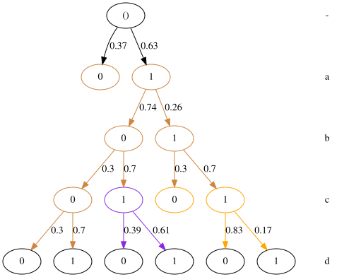
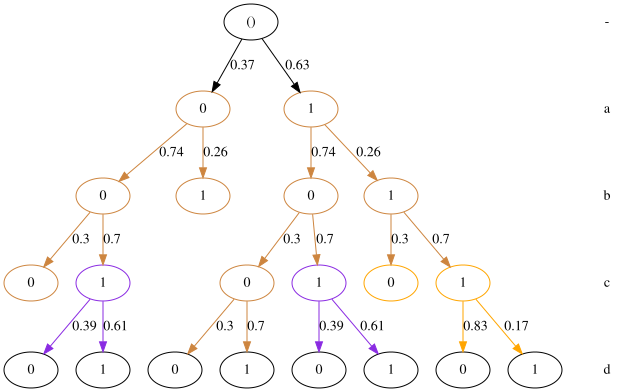
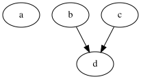
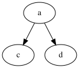
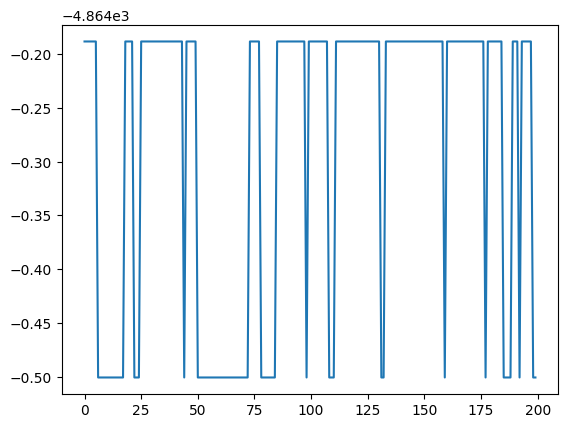
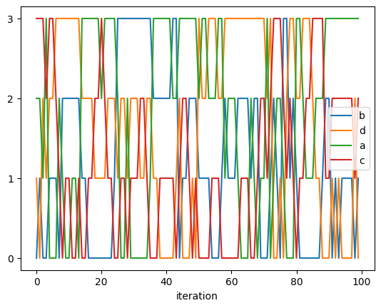
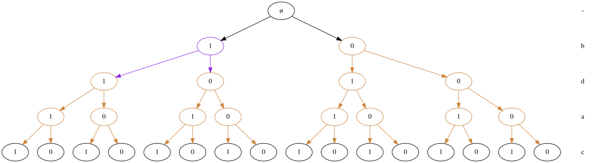
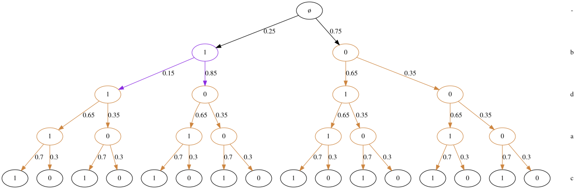
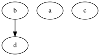

Learning CStree using Gibbs sampler
This notebook shows how to learn a CStree from observational data using McMC (Gibbs) sampling to approximate the posterior order distribution.
[70]:
import sys
import logging
import random
from causallearn.search.ConstraintBased.PC import pc
from causallearn.utils.cit import chisq
import pandas as pd
import matplotlib.pyplot as plt
import cslearn.cstree as ct
import cslearn.scoring as sc
import cslearn.stage as st
import cslearn.learning as ctl
import networkx as nx
import numpy as np
import pp
%load_ext autoreload
%autoreload 2
The autoreload extension is already loaded. To reload it, use:
%reload_ext autoreload
Sample a random CStree
We sample a 4-variables random CStree.
[71]:
np.random.seed(22)
random.seed(22)
p = 4
cards = [2] * p # state space cardinalities
t = ct.sample_cstree(cards, max_cvars=2, prob_cvar=0.5, prop_nonsingleton=1)
t.labels = ["a", "b", "c", "d"]
t.sample_stage_parameters(alpha=2)
[72]:
t.sample(10)
[72]:
| a | b | c | d | |
|---|---|---|---|---|
| 0 | 2 | 2 | 2 | 2 |
| 1 | 1 | 0 | 1 | 1 |
| 2 | 1 | 0 | 0 | 1 |
| 3 | 1 | 0 | 1 | 1 |
| 4 | 1 | 1 | 1 | 0 |
| 5 | 1 | 0 | 1 | 1 |
| 6 | 1 | 0 | 1 | 1 |
| 7 | 1 | 0 | 1 | 1 |
| 8 | 1 | 0 | 0 | 1 |
| 9 | 1 | 0 | 0 | 1 |
| 10 | 1 | 0 | 1 | 1 |
Plot the part of the tree that was used for sampling data
[73]:
t.plot()
Use plot(full=True) to draw the full tree.
[73]:

[74]:
t.sample(5)
[74]:
| a | b | c | d | |
|---|---|---|---|---|
| 0 | 2 | 2 | 2 | 2 |
| 1 | 0 | 0 | 1 | 1 |
| 2 | 0 | 0 | 1 | 1 |
| 3 | 1 | 1 | 1 | 0 |
| 4 | 1 | 1 | 1 | 0 |
| 5 | 1 | 0 | 0 | 0 |
[75]:
t.plot()
Use plot(full=True) to draw the full tree.
[75]:

Get the minimal context DAGs
[76]:
agraphs = t.to_minimal_context_agraphs()
print("Number of minimal contexts:", len(agraphs))
Number of minimal contexts: 2
[77]:
keys = list(agraphs.keys())
print("Context:", keys[0])
agraphs[keys[0]]
Context: None
[77]:

[78]:
keys = list(agraphs.keys())
print("Context:", keys[1])
agraphs[keys[1]]
Context: b=1
[78]:

[79]:
np.random.seed(6)
x = t.sample(2000)
Create the score tables
When creating the score tables, we restrict the possible context variables for each node by the parents estimated by PC algorithm.
[94]:
pcgraph = pc(x[1:].values, 0.05, "chisq", node_names=x.columns)
poss_cvars = ctl.causallearn_graph_to_posscvars(pcgraph, labels=x.columns)
print("Possible context variables per node:", poss_cvars)
Depth=1, working on node 3: 100%|██████████| 4/4 [00:00<00:00, 1812.38it/s]
Possible context variables per node: {'a': [], 'b': ['d'], 'c': ['d'], 'd': ['b', 'c']}
Create the score tables
[81]:
score_table, context_scores, context_counts = sc.order_score_tables(
x, max_cvars=2, alpha_tot=1.0, method="BDeu", poss_cvars=poss_cvars
)
Context score tables: 100%|██████████| 4/4 [00:00<00:00, 426.29it/s]
Creating #stagings tables: 100%|██████████| 4/4 [00:00<00:00, 16070.13it/s]
Order score tables: 100%|██████████| 4/4 [00:00<00:00, 5970.54it/s]
Run the Gibbs sampler
[82]:
orders, scores = ctl.gibbs_order_sampler(5000, score_table)
Gibbs order sampler: 100%|██████████| 5000/5000 [00:00<00:00, 18999.33it/s]
Trajectory score plots
We plot the first 200 iterations of the order score trajectory.
[83]:
plt.plot(scores[:200]);

Variables order positions
To further investigate the McMC trajectory we find the individual variables positions/levels in the orders and plot these. This gives an overview of the mixing properties of the sampler and if the trajectory seems to have converged.
[84]:
var_positions = {var: [x.index(var) for x in orders] for var in orders[0]}
var_positions["iteration"] = list(range(len(orders)))
plotdf = pd.DataFrame(var_positions)
Assuming that the majority of probability mass is centered around the order corresponding to the true CStree (though there could be many or them), the a-line should converge to 0 (i.e. position 0), the b-line should converge to 1, and so on.
[85]:
plotdf[:100].plot(x="iteration", y=range(p), yticks=range(len(orders[0])));

Get the maximal scoring order
[86]:
maporder = orders[scores.index(max(scores))]
maporder
[86]:
['b', 'd', 'a', 'c']
Get the maximal scoring CStree for the order
[87]:
opttree = ctl._optimal_cstree_given_order(maporder, context_scores)
[88]:
opttree.to_df()
[88]:
| b | d | a | c | |
|---|---|---|---|---|
| 0 | 2 | 2 | 2 | 2 |
| 1 | 0 | - | - | - |
| 2 | 1 | - | - | - |
| 3 | * | * | - | - |
| 4 | * | * | * | - |
| 5 | - | - | - | - |
[89]:
opttree.plot(full=True)
[89]:

Estimate the CStree parameters
[90]:
opttree.estimate_stage_parameters(x, alpha_tot=2.0, method="BDeu")
opttree.to_df(write_probs=True)
[90]:
| b | d | a | c | PROB_0 | PROB_1 | |
|---|---|---|---|---|---|---|
| 0 | 2 | 2 | 2 | 2 | NaN | NaN |
| 1 | 0 | - | - | - | 0.352174 | 0.647826 |
| 2 | 1 | - | - | - | 0.847140 | 0.152860 |
| 3 | * | * | - | - | 0.353646 | 0.646354 |
| 4 | * | * | * | - | 0.300699 | 0.699301 |
| 5 | - | - | - | - | 0.746753 | 0.253247 |
[91]:
opttree.plot(full=True)
[91]:

Plot the DAG representation
[92]:
agraphs = opttree.to_minimal_context_agraphs()
len(agraphs)
[92]:
1
[93]:
keys = list(agraphs.keys())
print(keys[0])
agraphs[keys[0]]
None
[93]:
